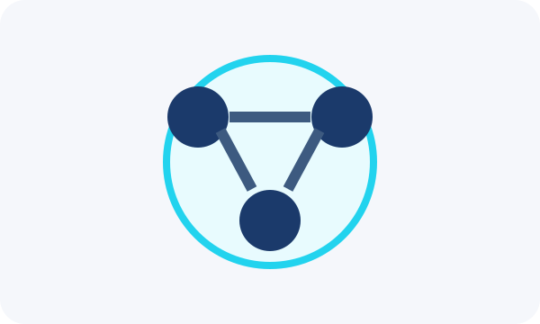

La tecnología puede facilitar la comunicación, la colaboración y la participación de los jóvenes en su comunidad.

La ciudadanía digital incluye informarse, comunicarse, respetar a los demás y participar de manera responsable.
Consulta información de fuentes confiables y comprende diferentes puntos de vista.
Comparte opiniones e ideas respetando la dignidad y los derechos de otras personas.
Utiliza herramientas digitales para coordinar actividades, proyectos y acciones comunitarias.
Convierte la información y las ideas en acciones responsables dentro de tu entorno.